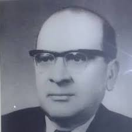
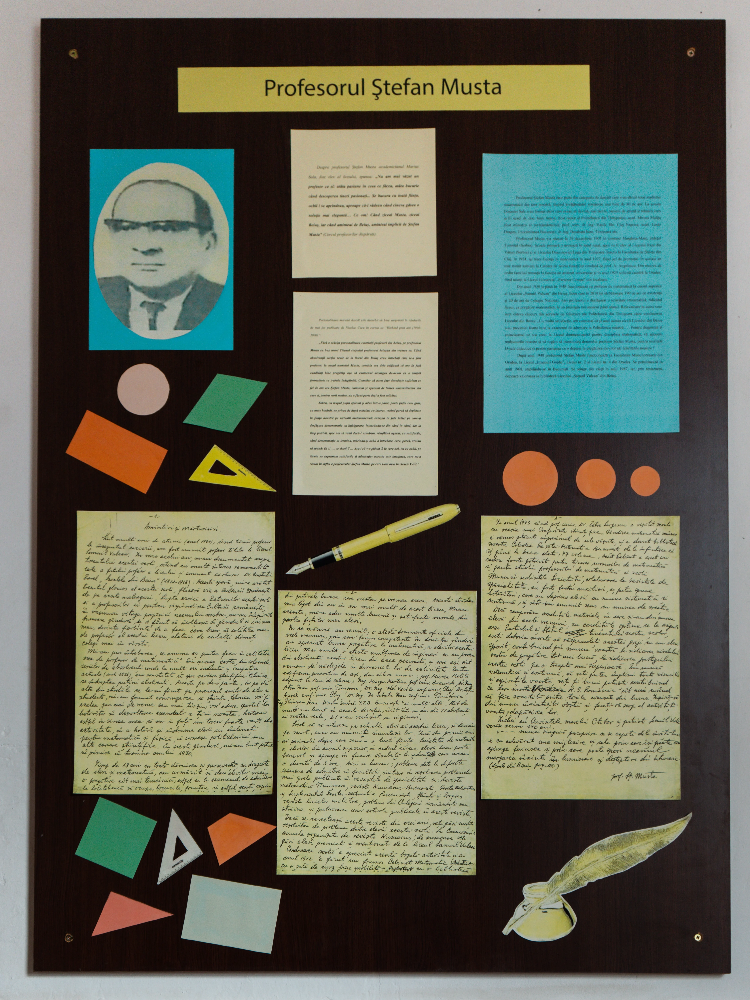
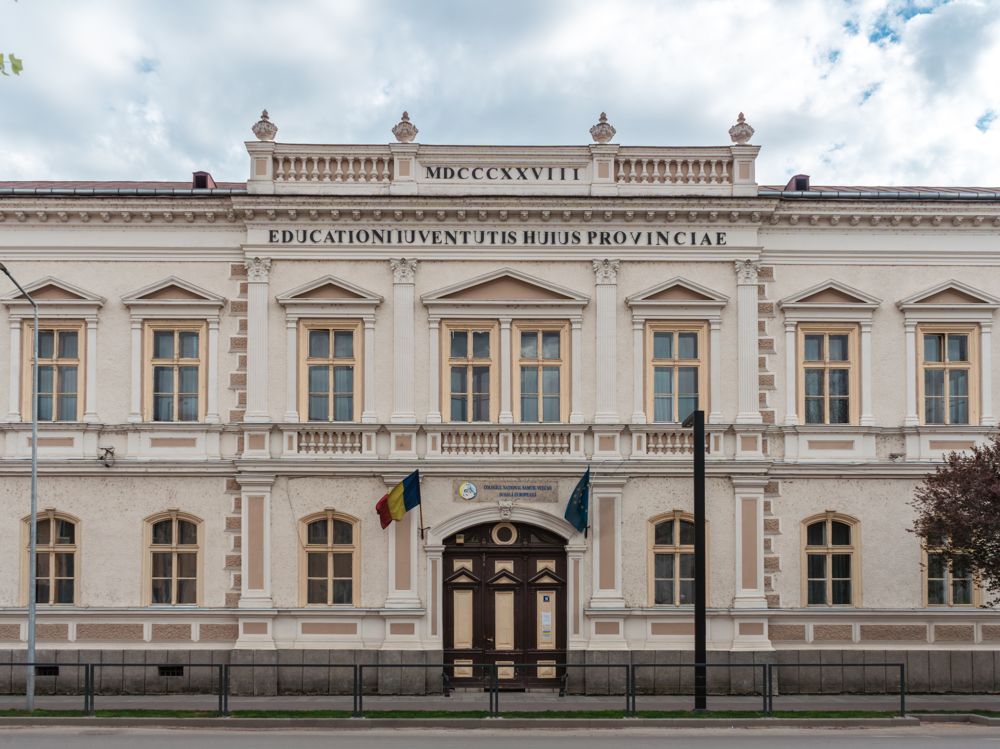
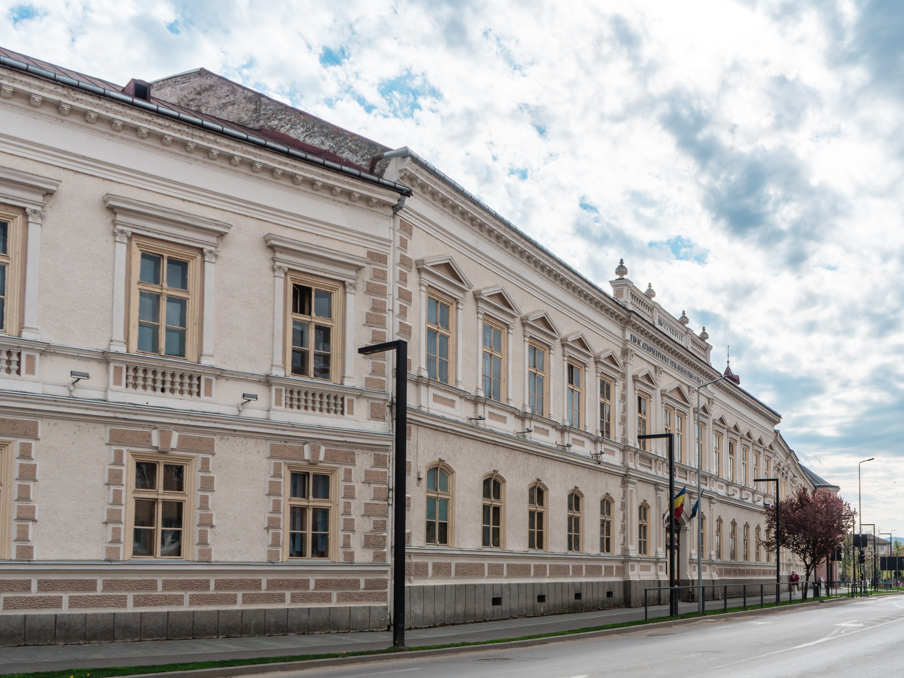

Biografie
Un Titan al corpului profesoral beiușan
Profesorul Ștefan Musta face parte din categoria de dascăli care s-au dăruit total studiului matematicii. Cu o pregătire profesională excepțională, perfecționată continuu, acesta a slujit învățământul românesc mai bine de 40 de ani.
Formarea academică
S-a născut la 29 decembrie 1903 în comuna Marghita-Mare, județul Torontal (Serbia). A urmat liceul real din Vârșeț, apoi din 1919 liceul „Diaconovici Loga" din Timișoara, unde l-a avut ca profesor pe Valeriu Alaci, viitorul profesor de analiză matematică la Politehnica din Timișoara.
A terminat liceul în 1924, avându-l ca președinte al comisiei de bacalaureat pe marele matematician Nicolae Abramescu, care a stăruit ca tânărul absolvent să urmeze Facultatea de Matematică din Cluj. În 1927 a absolvit cu mențiunea „distincție" și a fost imediat numit asistent universitar la catedra de teoria funcțiilor a profesorului Aurel Angelescu.
Examenul de capacitate l-a susținut la București, sub președinția marelui matematician Gheorghe Țițeica.
Parcursul profesional
Moștenirea de la Beiuș
La Liceul „Samuil Vulcan" din Beiuș, profesorul Musta a înființat „Societatea de matematică a elevilor din cursul superior", cu ședințe săptămânale de câte 2 ore. Se lucrau probleme de la examene de admitere, din Gazeta Matematică, din Revista de Matematică din Timișoara și din culegeri românești și străine.
Rezultatele nu s-au lăsat așteptate. Începând din 1932, absolvenții din Beiuș au excelat la Politehnica din Timișoara. În 1941, la examenul de admitere, locurile I–IV au fost ocupate de elevii profesorului Musta. Politehnica a trimis adrese oficiale de felicitare liceului.
La școala sa s-au format personalități de renume: acad. dr. doc. Ioan Anton, fost rector al Politehnicii din Timișoara; acad. Mircea Malița, fost Ministru al Învățământului; acad. Lazăr Dragoș de la Universitatea București, și mulți alții.
„Fără a scăriţa personalitatea celorlalţi profesori din Beiuş, pe profesorul Musta eu l-aş numi Titanul corpului profesoral beiuşan din vremea sa. Când absolvenţii secţiei reale erau întrebați cine le-a fost profesor, la auzul numelui Musta, comisia era deja edificată că are în faţă candidaţi bine pregătiţi." — Nicolae Cucu, „Răzbind prin ani (1930–2000)"
Colegiul Național „Samuil Vulcan"
Concursul se desfășoară anual la Colegiul Național „Samuil Vulcan" din Beiuș, instituția la care profesorul Musta a predat timp de aproape două decenii.



Activitatea științifică
A publicat peste 25 de articole în Gazeta Matematică și Revista de Matematică din Timișoara. A fost membru în comitetul redacției „Numerus" (1936), în comitetul de conducere al Revistei Matematice din Timișoara (1940), și președinte al filialei Societății de Matematică și Fizică din Oradea.
Memoria vie
S-a stins din viață în 1987, la București. Prin testament, a donat valoroasa sa bibliotecă Liceului „Samuil Vulcan" din Beiuș.
Păstrând vie imaginea acestui ilustru dascăl, catedra de matematică a Colegiului Național „Samuil Vulcan" Beiuș organizează anual, începând cu anul 1995, concursul de matematică care îi poartă numele.
„Parcă-l văd la catedră cu privirea pătrunzătoare dar blândă îndreptată spre clasă. Era un pedagog desăvârşit, exigent, perseverent în muncă, stimulând în cadrul lecţiilor dragostea pentru matematică." — Un fost elev al Liceului „Samuil Vulcan"